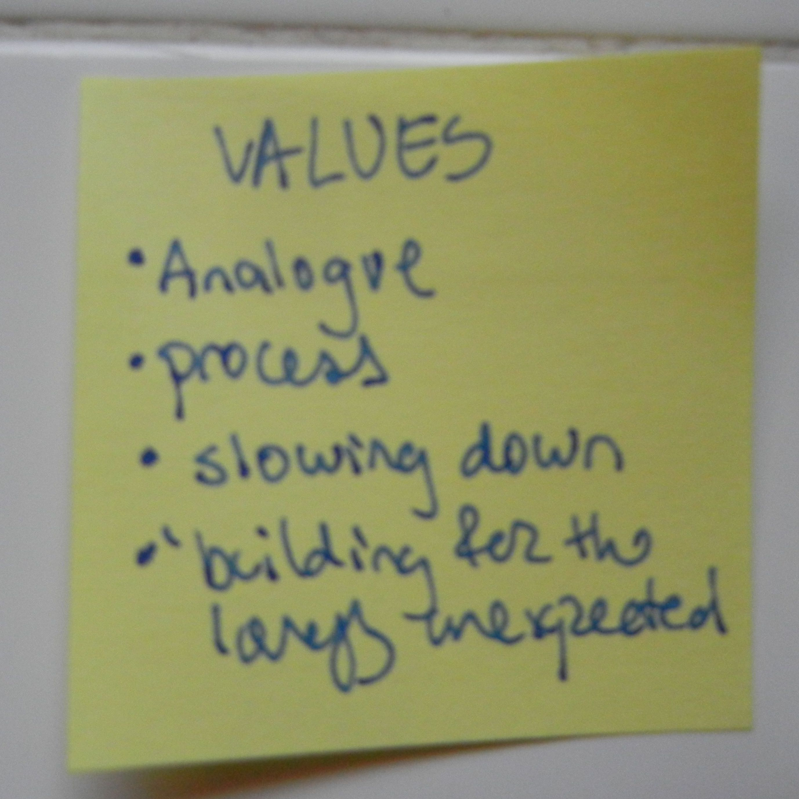

I have come to understand being a geographer as less of an ability to know where you are in space at all times and more of a capacity to learn through disorientation. Like many colleagues, I began graduate school in a place I’d never been before and where I didn’t really know anyone. As teaching assistant for a departmental cartography course, I was responsible for introducing and evaluating assignments, as well as demonstrating the use of required software. The first assignment: to make a map of downtown Vancouver by tracing a screenshot from Google Maps in Adobe Illustrator. I graded sixty of these maps before I finally ventured to the place they represented.
My first excursion downtown was in December of 2021, six months after I'd arrived in Vancouver. I took the 7 from Dunbar all the way to the waterfront. This took about an hour - one reason downtown seemed so distant and therefore inaccessible from the rest of the city. I was stuck on a term paper and figured disorientation might help. It did. I rode the bus for about an hour, through the skyscrapers of downtown down to Waterfront Station where we turned right, following the harbor's edge. I stepped off a few stops later. Still walking in the same direction as I'd been traveling a moment before, I came upon a bridge (an infrastructure which has supported me since ). The following became the Prologue to that term paper:
Where Main Street ends, at the boundary between Gastown and the Downtown Eastside, there is a bridge. Well it’s more of a ramp really that curls around so the road never ends but continues by a different name in a new direction. I found myself there the other morning, standing alone just gazing towards the North Shore Mountains. It was clear and cold and snow had settled over their jagged peaks in a perfect gradient. Before the mountains and directly below me spread a panoply of infrastructure––Vancouver’s Centennial Terminals. Tower cranes, gantry cranes, straddle carriers, forklifts, trucks, trains, train tracks, shipping containers, and pipes of iron and steel. Every dimension was in motion. Machinery moved slowly and methodically while humans moved in erratic zig-zags around the pavement. Some were operating the machinery while some machinery were operating themselves. As a train drew in below me I peered down to see the conductor watching the switchboard, prepared to take action in the event of system failure. But what happens when the train is your argument and it fails to budge along the tracks you’ve set out for it to follow? In my case, I laid down too many tracks. I got so swept up in constructing the possible paths this essay could take that when I geared up to leave the station––to write it all out––I was paralyzed by the tangle before me. Although a lifelong creative, my undergraduate background is predominantly in the sciences and so thinking and writing academically within the context of humanities scholarship is new. The infrastructure of a bridge holds sound because it is built not from one side over to the other but from both sides at once. I want to act as a bridge between the arts and sciences and so I have thrown myself from mountains, from geomorphology and erosion rates, over to a new shore (and country) with cities and people and infrastructures to start building from another perspective. Since arrival, I have been all around disoriented and not at all adept. My ideas are sprawling and interconnected like Centerm shipyard. There is so much this city this class and these books have led me to unpack and explore. For now, however, I am taking one final title, turning in one final direction, and following a single train of thought to an end with the idea of infrastructure in mind.
Having now inhabited Vancouver for over two years and taught this assignment nine times, I find Google’s map incongruous with my mental map of the city drawn from practical experience. Navigational maps, writes Laura Kurgan, “impos[e] a quiet tyranny of orientation that erases the possibility of disoriented discovery. . .” (2009, 16-17).

 Kurgan, Laura. Close up at a Distance: Mapping, Technology, and Politics. First hardcover edition. Brooklyn, NY: Zone Books, 2013.
Kurgan, Laura. Close up at a Distance: Mapping, Technology, and Politics. First hardcover edition. Brooklyn, NY: Zone Books, 2013.
Spatial awareness of my surroundings has evolved not by following Google Maps from A to B or memorizing the trace of its aerial contours, but rather through becoming lost and wandering around. Thus disoriented, I find areas of familiarity connected in surprising ways. . .
I take the 33 bus to campus on a whim. I'm running late to teach and I don't want to deal with the hassle of Broadway construction.
Why have I never taken the 33? I wonder as a 5 minute walk brings me to a deserted stop. I sit on a bench in the sun to catch my breath. The 33 is one of the smaller buses. Its seats have that soft fabric patterned like a roller rink carpet. Riding the 33 is outside my routine. Its route takes me through places I've been before but have never connected by this route. I write these thoughts in the white space of a book I brought with me -
A History of My Brief Body by Billy-Ray Belcourt.
Some time later I boarded the 99 B-Line with Critical Concepts for the Creative Humanities. I had been in a rush to leave and grabbed it spontaneously from the pile of books on my kitchen table because it fit in my coat pocket and also because each concept is a 4 page read––the time it takes to ride the 99 Bus 2 stops west along Broadway. It opened in my lap to where I'd hastily tucked an IKEA crayon. A concept I'd been thinking about all day but had yet to visit in this book: Navigation.


Tuin, Iris van der, and Nanna Verhoeff.
Critical Concepts for the Creative Humanities. Rowman & Littlefield, 2022.
"...navigation entails the production of a performative cartography of a terrain, field, or domain that is constituted in the very act of its exploration" (Tuin and Verhoeff 2022, 137). Exploration, put one way, is "the action of traveling in or through an unfamiliar area in order to learn about it." Though the field (city, body of academic literature) may be at first unknown and therefore unfamiliar, iterative navigation coheres a web of spatial relations that serves as reference. This is how I conceive of a mental map. Unlike google’s two dimensional map that directs navigation from A to B, mental maps are composed (and decomposed) through nonlinear, even destination disoriented navigations that form "those invisible lines of people, places, and networks that create the most common spaces we live in today" (Kurgan 2013, 17).
From practical experience and reading de Certeau, Barad, and Lefebvre, I came to the realization that the city is not a singular fixed and bounded site which pre-exists my encounter and which I as researcher may separate myself from in order to map from a distanced, exterior position. Rather, “the city” is performatively constituted as a physical-conceptual field of encounter whose emergent topology is (practically) drawn through everyday navigations. As such, the city and I are entangled, continuously figured and reconfiguring in dynamic relation.
Flat maps such as Google’s map abide by ‘The law of the “proper”’ (de Certeau 1984, 94):
The law of the ‘proper’ rules in the place: the elements taken into consideration are beside one another, each situated in its own "proper" and distinct location, a location it defines. A place is thus an instantaneous configuration of positions.
Google’s map renders the city as “an instantaneous configuration of positions” (de Certeau 1984, 94)––a proper place wherein each element has a distinct location. Such a static coordination allows for navigation to be routed linearly (by Google) from one element to another––e.g. from work to home. The route, however, is defined by the law of the proper: follow roads, not alleys; walk on sidewalks, not streets; don’t j-walk; turn right now, not at the next block. Re-presenting the city through points, lines, and polygons elides the multiplicity of practices that compose urban space. To trace Google’s map of Vancouver, whether by foot or by cursor, is a performative citation of the city as a proper place which makes determinate an instantaneous configuration while rendering unintelligible the everyday practices that produce urban space. (Workshop this last sentence and elaborate on references)
 de Certeau, Michel. The Practice of Everyday Life. Translated by Steven Rendall. Berkeley: University of California Press, 1984.
de Certeau, Michel. The Practice of Everyday Life. Translated by Steven Rendall. Berkeley: University of California Press, 1984.
Maps meant for directed navigation from A to B render invisible the act of navigation which created them and which they may propel. Spatial awareness––be it of a software interface, web-map, or city––develops through use, through everyday practices of navigating around. Spatial awareness is therefore practical knowledge. Practical knowledge is legible within mental maps in a way it is not within Google Maps. Google Maps doesn't account for the weekly re-configuring of pedestrian traffic around a major intersection due to a multi-year subway construction project. When the law of the proper attempts to map detours, tracing it inevitably leads to disorientation. Sometimes the best way to gain spatial awareness is to look/listen/feel/sense up and around at one’s surroundings.
Disorientation destabilizes the law of the proper. There are (at least) two kinds of navigation with a "futuristic thrust": destination-oriented navigation and lure-oriented navigation, and both are opportunities to practice disoriented discovery.
Destination-oriented navigation must not needs be direct(ed) movement from one location to another.
Choose a destination you can navigate to without the use of Google Maps. Begin from a familiar location. Try navigating there by taking a detour or making up an alternative route. How far out of your way can you go? Practice the exercise again but beginning from an unfamiliar location. What changes?
Choose a destination you have been to before but which you must pass through an unfamiliar to reach. Perhaps you’ve navigated there in the past, but used Google Maps to guide your use of public transport. Or it was late and dark and you couldn’t quite make out the landmarks blurred by the rain. Beginning from a familiar location––your home for example––navigate towards your destination without the use of Google Maps. Reflect on what senses/memories/stimuli you used to guide you. Did you encounter anything surprising or before unknown in the process?
Or go on a drift alone or with a friend - turning towards unfamiliarity as far as you can go. Get on a bus and get off on impulse.
Alternatively, the destination may not be a particular geographic location but rather a lure. Navigation then might be expressed as a wandering forth in search of a connection, pursuing a gut feeling, the drift of a graffiti tag, intuition, or allowing oneself be tugged and pulled by affective contours such as a sidewalk dappled with sunlight, an inviting cluster of houses, the smell of california lilacs, or further still, moving towards a sensed (but not seen) opening.
One day I biked to lighthouse park, 30 kilometers each way. I decided not to use a navigational map and just find my way there. I biked through downtown and took the water taxi across burrard inlet to lonsdale quay from where I leisurely made my way over many hills to Lighthouse Park in western vancouver. On my way there I was lazily biking through neighborhoods, getting a sense of the area. At one moment it seemed as though I was caught in a loop and would have to backtrack to get out and on. But I had a feeling there would be a pathway and that was enough to draw me forwards. Sure enough, between two houses was the slimmest trail which opened onto a pathway that ran behind 3 rows of houses.
My research-creation is driven by intellectual and spatial topoi which lure me forwards even before I comprehend where they lead (Loveless 2019, 70).
 Moretti, Christina. “Walking.” In A Different Kind of Ethnography: Imaginative Practices and Creative Methodologies, edited by Denielle Elliott and Dara Culhane, 45–67. North York, Ontario, Canada ; Tonawanda, New York, USA: University of Toronto Press, 2017.
Moretti, Christina. “Walking.” In A Different Kind of Ethnography: Imaginative Practices and Creative Methodologies, edited by Denielle Elliott and Dara Culhane, 45–67. North York, Ontario, Canada ; Tonawanda, New York, USA: University of Toronto Press, 2017.
In my research, disoriented discovery is both a method and object of my inquiry.
navigations/encounters both practice and object of inquiry (object and method stuff supported by research-creation, baradian apparatus, lefebvre). Detours, like taking 33 bus or taking a new route to a familiar location, are generative of new pathways and contain the possibility of making surprising connections.
 Fitzpatrick, Esther. “The Bricoleur Researcher, Serendipity and Arts-Based Research.” Ethnographic Edge 1, no. 1 (December 7, 2017): 61–73.
Fitzpatrick, Esther. “The Bricoleur Researcher, Serendipity and Arts-Based Research.” Ethnographic Edge 1, no. 1 (December 7, 2017): 61–73.
"the bricoleur... is arguably less governed by an overarching awareness that they are embarked on a ‘project’, and that, correspondingly, they are performing in compliance with a clearly defined set of ‘aims’ or ‘objectives’. The idea that research might be conducted under conditions of aimlessness and without a clear objective in mind does not necessarily mean that it lacks the rigours of ‘accomplishment and execution’ but that much of what is fashioned in the process is contingent on factors that cannot always be foreseen." (Roberts 2018, ?)
bricoleur-as-researcher.
[r-c time and space to experiment in unpredictable directions] Embracing serendipity and spontaneity --> build for the lovely unexpected - manifesto for relationship anarchy.
february 22 2022:
-designing own commitments (perfect for aims and values) --> thesis. by now - gathered this is not normative.
I hope you are exceited, if you have some trepredation, disoreitned - okay!

from initial thesis mindmapping, May 2022.
My thesis emerges as a response to my question: what could it mean to think with place? to feel the city?
>Mention deep mapping? [stuff from index]
My thesis is a partial account of an ongoing and open-ended dialogue with the world initiated by my question: what could it mean to think with place? to feel the city? I investigate these provocations through deep mapping, a capacious practice of situated, embodied inhabitation which assumes the physical-conceptual field of encounter as interlocutor. .... etc. ..... the web-field-site of my thesis output marks a praxis of interference while being itself the articulation of (systemic) interference as praxis. The pages of negative-spaces.github.io 1. introduce my practice of deep mapping 2. convey my theorization of deep mapping as generated through my practice of deep mapping, and 3. articulate how rendering my research-creation public enacts theory as praxis.
My thesis is not cartesian map of Vancouver nor is it an outline of practice.
TALK IF ANY MAP, RHIZOMATIC, -> NOT ARBORESCENT TRACING (ATP)
I approach my masters thesis as a journey - a project of making and doing and making do.
> to be grasped invites detours, detournement, and disoriented discovery. (invitation to this site)
Think with place, feel the city. As such, my thesis is process rather than destination oriented. It emerges from navigating the field of possibilities opened up when A and B are recognized to be but place holders like latitude and longitude. After all, iteration of a form reveals beginning and end to be merely places of turning and return.
 DISORIENTATION
DISORIENTATION